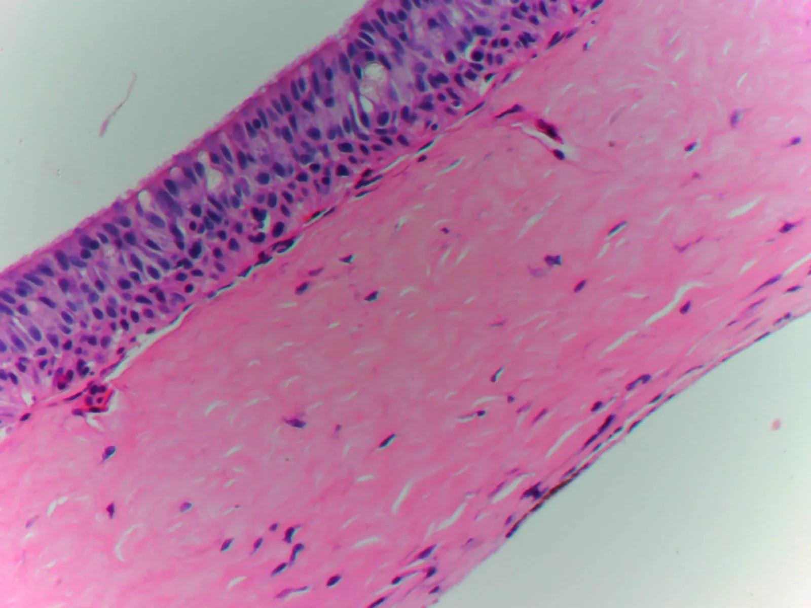
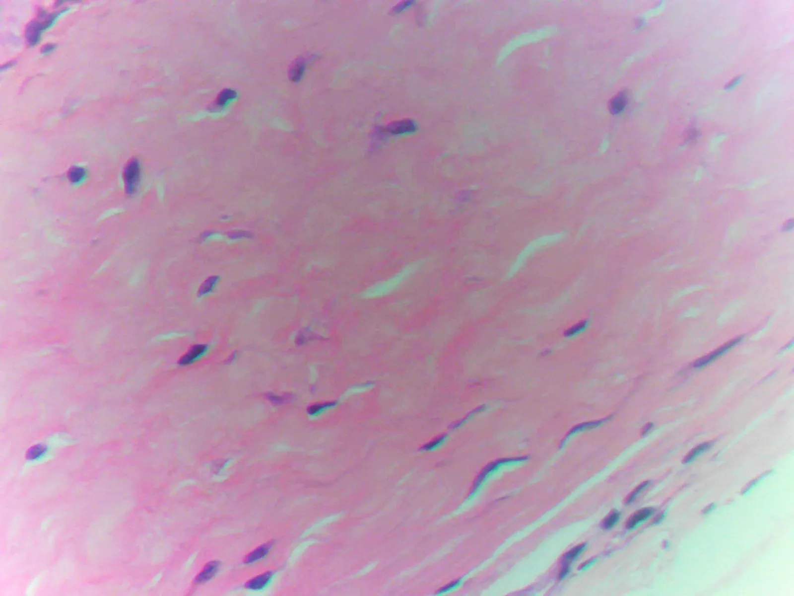

Lâmina 02 · Tecido epitelial
Epitélio pseudoestratificado ciliado


Toque na imagem para ampliar. No computador, use as setas do teclado para trocar de imagem.
Lâmina 02 · Tecido epitelial


Toque na imagem para ampliar. No computador, use as setas do teclado para trocar de imagem.